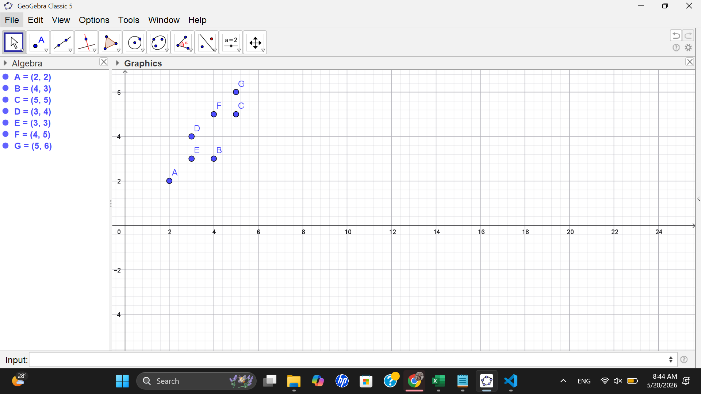
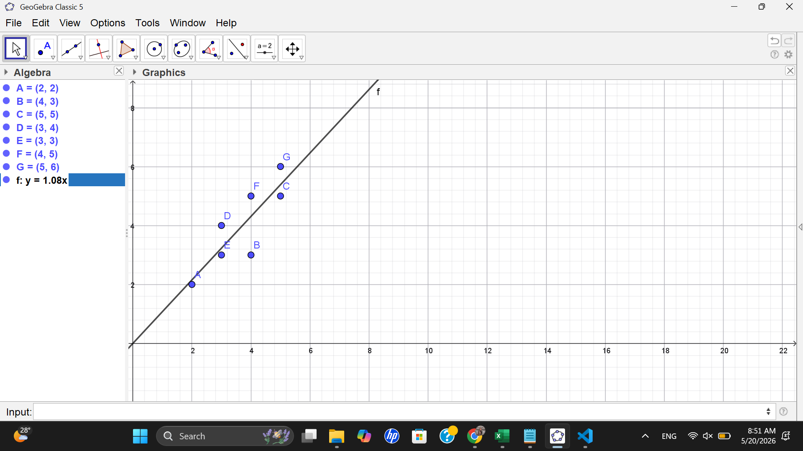

Analisis Data Menggunakan Regresi Linier#
Data Titik#
Titik |
x |
y |
|---|---|---|
A |
2 |
2 |
B |
4 |
3 |
C |
5 |
5 |
D |
3 |
4 |
E |
3 |
3 |
F |
4 |
5 |
G |
5 |
6 |
Visualisasi Data Menggunakan GeoGebra#
Titik di GeoGebra#

#Penyelesaian Regresi Linier#
Persamaan regresi linier:
[ y=\beta_0+\beta_1x ]
Koefisien regresi dihitung menggunakan persamaan:
[ \hat{\beta}=(X^TX)^{-1}X^TY ]
Membentuk Matriks X dan Y#
Matriks (X):
[
X=
\begin{bmatrix}
1 & 2
1 & 4
1 & 5
1 & 3
1 & 3
1 & 4
1 & 5
\end{bmatrix}
]
Matriks (Y):
[
Y=
\begin{bmatrix}
2
3
5
4
3
5
6
\end{bmatrix}
]
Menghitung (X^TX)#
[
X^TX=
\begin{bmatrix}
7 & 26
26 & 104
\end{bmatrix}
]
Menghitung Invers ((X^TX)^{-1})#
Rumus invers matriks 2×2:
[
A^{-1}=
\frac{1}{ad-bc}
\begin{bmatrix}
d & -b
-c & a
\end{bmatrix}
]
Maka:
[ (X^TX)^{-1}#
\frac{1}{(7)(104)-(26)(26)}
\begin{bmatrix}
104 & -26
-26 & 7
\end{bmatrix}
]
[#
\frac{1}{52}
\begin{bmatrix}
104 & -26
-26 & 7
\end{bmatrix}
]
[#
\begin{bmatrix}
2 & -0.5
-0.5 & 0.1346
\end{bmatrix}
]
Menghitung (X^TY)#
[
X^TY=
\begin{bmatrix}
28
111
\end{bmatrix}
]
Menghitung Koefisien Regresi#
[ \hat{\beta}#
(X^TX)^{-1}X^TY ]
[#
\begin{bmatrix}
2 & -0.5
-0.5 & 0.1346
\end{bmatrix}
\begin{bmatrix}
28
111
\end{bmatrix}
]
Hasil:
[ \hat{\beta}#
\begin{bmatrix}
0.5
0.9423
\end{bmatrix}
]
Sehingga diperoleh:
[ \beta_0 = 0.5 ]
[ \beta_1 = 0.9423 ]
Persamaan Regresi Linier#
Persamaan regresi linier yang diperoleh adalah:
[ y = 0.5 + 0.9423x ]
Interpretasi:
Nilai intercept sebesar 0.5
Setiap kenaikan nilai (x) sebesar 1 akan meningkatkan nilai (y) sebesar 0.9423
Kesimpulan#
Berdasarkan hasil perhitungan regresi linier menggunakan metode analitik, diperoleh persamaan:
[ y = 0.5 + 0.9423x ]
Persamaan tersebut menunjukkan bahwa variabel (x) memiliki hubungan positif terhadap variabel (y).
